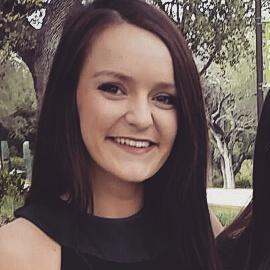

 ABOUT ME
Education
Bachelor of Science Degree in Computer Science San Antonio, Texas
Minor: Mathematics
Skills
Languages: Haskell, C++, C#, C, Scala, Java, PHP, HTML, CSS, JavaScript
Operating Systems: Linux, Windows 7, Windows 8, OS X
Environments: Visual Studio, Eclipse, vim
Database: MySQL Workbench, MS SQL, Access, TOAD, Network Applications
Applications: Adobe Photoshop, Word, Excel, PowerPoint, Outlook
Tools: Bootstrap framework, jQuery library
Experience
AT&T Summer 2015
Student Intern – Technical I Saint Louis, Missouri
Leadership
Web Master, Chi Beta Epsilon
Created and operated a website for my Greek organization
Treasurer, Women in Computing
Collaborated with club officers to effectively coordinate club events
Treasurer, Chi Beta Epsilon
Managed a small business bank account and kept track of money flow
Scholarship Chair, Chi Beta Epsilon
Collaborated with a small group to determine the worthiness of scholarship funds
Diving, Trinity University
Competed on the university’s national-qualifying NCAA division III team
Strengths
/* class="content" */
- Worked on an agile team as a developer to create a specified web application
- Engaged in daily conference calls with my client
- Worked on data migration, data cleansing, and migration status logging for the company’s test case management tool
- Remained up-to-date on the company’s working projects and involvements
- Participated in external events including volunteering, networking, and picnics
- Provided excellent customer service in a fast-paced environment full-time
- Sustained working knowledge of menu items and inventory in store
- Instructed group and private swim and dive lessons in two week intervals
- Consistently maintained a safe, fun environment for all patrons
- CPR certified
- Passion for problem solving using mathematical background
- Enthusiastic about coding and eager to learn
- Self driven, independent and fast learner
- Work well independently and in groups, and enjoy collaborative environments